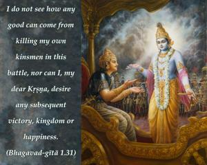
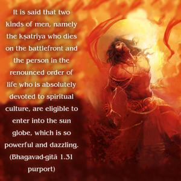
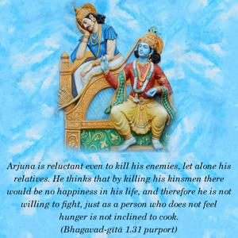
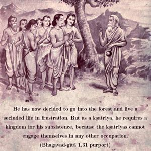

I do not see how any good can come from killing my own kinsmen in this battle, nor can I, my dear Kṛṣṇa, desire any subsequent victory, kingdom or happiness.




Without knowing that one’s self-interest is in Viṣṇu (or Kṛṣṇa), conditioned souls are attracted by bodily relationships, hoping to be happy in such situations. In such a blind conception of life, they forget even the causes of material happiness. Arjuna appears to have even forgotten the moral codes for a kṣatriya. It is said that two kinds of men, namely the kṣatriya who dies directly in front of the battlefield under Kṛṣṇa’s personal orders and the person in the renounced order of life who is absolutely devoted to spiritual culture, are eligible to enter into the sun globe, which is so powerful and dazzling. Arjuna is reluctant even to kill his enemies, let alone his relatives. He thinks that by killing his kinsmen there would be no happiness in his life, and therefore he is not willing to fight, just as a person who does not feel hunger is not inclined to cook. He has now decided to go into the forest and live a secluded life in frustration. But as a kṣatriya, he requires a kingdom for his subsistence, because the kṣatriyas cannot engage themselves in any other occupation. But Arjuna has no kingdom. Arjuna’s sole opportunity for gaining a kingdom lies in fighting with his cousins and brothers and reclaiming the kingdom inherited from his father, which he does not like to do. Therefore he considers himself fit to go to the forest to live a secluded life of frustration.